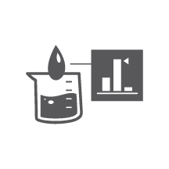

巴西田谷農場位於烏巴哈洛鎮，佔地1,269公頃（3,136英畝）。這裡實在太大了，足足相當於我們另外3座農場。
紐崔萊自然純淨
我們在這裡種植了超過138,000棵針葉櫻桃樹，每年生產大約2,000公噸的櫻桃。
這麼多的櫻桃樹，需要大量的肥料，我們一年平均使用20,300公噸，可以裝滿232個火車車廂！
蟲子也會幫助我們，它們製造出液體生物肥料，裡面含有好的微生物，可幫助作物生長。

紐崔萊產品安全
在我們所有的農場，安全都是至關重要的。因此我們的標準超越良好農業規範（GAP）。
一切都在細節裡。舉例來說，我們的農具和設備每次使用前都會經過清潔和消毒，防止長出微生物。

在巴西農場，我們檢測所有的灌溉用水中是否含有病原體，供水系統也是一絲不苟地記錄並繪製地圖。

紐崔萊高效營養
我們農場中的科學家精確掌握該在什麼時機收成作物，才能確保其中的成分是最有效的。針葉櫻桃含有超過150種植物營養素，在果實還是綠色、尚未成熟時收成，可以確保其中的維生素Ｃ含量最高，是柳橙的50至70倍。
事實上，我們的農場裡種植了超過80種不同的針葉櫻桃──是已知種類的95%，就只是為了替你找出最有效的品種！